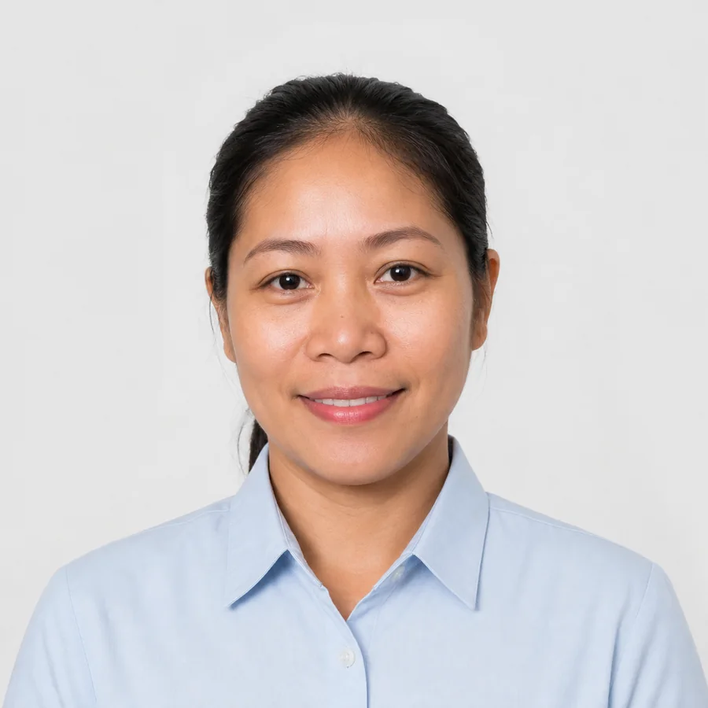
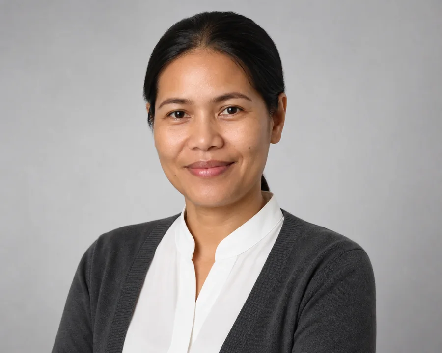

Find Helper尋找外傭
Start with family need and show suitable helper records.先由家庭需要出發，再展示合適外傭資料。
A GoldenWin-style homepage structure with real language switching: clear hero promise, find-helper entry, best offer, only renew online, helper profiles, and contact path.跟高菲首頁的區段節奏：清楚主句、尋找外傭入口、
優惠推介、網上續約、外傭資料、聯絡查詢；
同時加入真正 EN／繁中切換。
GoldenWin’s public homepage is direct: hire helper, best offer, renew online. The demo now follows that rhythm instead of using vague “UX concept” headers.高菲公開首頁的方向很直接：聘請外傭、優惠、網上續約。這版改成同樣節奏，不再用太抽象的 UX 標題。
Start with family need and show suitable helper records.先由家庭需要出發，再展示合適外傭資料。
Service package or promotion entry can sit near the top without crowding the search.服務套餐或優惠入口可放近首頁，但不搶走搜尋重點。
Renewal is a major business path, so it becomes a clear homepage section.續約是重要業務路徑，所以獨立成清楚首頁區段。
The header follows the public homepage logic: find helper first, then helper records. Filters stay compact so iPhone users do not feel trapped in a database.跟公開首頁邏輯：先「尋找外傭」，再看外傭資料。篩選保持精簡，避免手機上像進入資料庫。
Newborn care and simple cooking. Staff-reviewed synthetic profile.新生兒照顧及基本煮食；合成資料，職員審核狀態示範。
Elderly care, medication reminders and stable household routine.長者照顧、服藥提醒及穩定家庭流程。

Pet-friendly, groceries, cooking and daily home routines.適合寵物家庭、買餸、煮食及日常家務。

Hong Kong experience, child care and school-run support.香港經驗、小朋友照顧及接送支援。
The profile page shows photo, update time, review status, fit reason, and interview action.詳情頁展示相片、更新時間、審核狀態、適合原因和預約面試。
31 · Philippines · Interview ready. Self-update reviewed before public display.31 歲 · 菲律賓 · 可面試。外傭自填後由職員核對才公開。
Availability, skills, experience and preferred duties.可上班日期、技能、經驗和期望工作。
Agency checks dates and key claims before showing the update.公開前先核對日期和主要資料。
The same WhatsApp link stays current without sending another PDF.同一條 WhatsApp 連結自動顯示最新版。
This follows the homepage-style business header instead of hiding renewal deep inside account pages.這是跟首頁式業務標題走，而不是把續約藏在帳戶深處。
Use service context and helper records, not decorative effects, to show professionalism.用服務場景和外傭資料展示專業，不靠裝飾效果。
Employer submits request僱主提交續約Basic family/helper details.基本僱主及外傭資料。
Staff reviews documents職員核對文件Correct, translate, approve or hold.修正、翻譯、批准或暫停。
Progress updates進度更新Client sees clear next step.客人清楚知道下一步。
Major business routes are named directly: hire helper, best offer, renew online, helper profiles, online service and contact.主要業務入口直接命名：聘請外傭、優惠推介、網上續約、外傭資料、網上服務及聯絡我們。
The CTA stays service-led: request a guided interview, share the profile with family, then staff confirms the next step.按鈕語氣保持服務感：預約面試、分享給家人、由職員確認下一步。
Private preview note:私人示範： No GoldenWin/Sunny proprietary code, logo, images, or real helper records are used. All people and profile data are synthetic. Header wording is only a public-structure reference.沒有使用 GoldenWin / Sunny 專有程式碼、標誌、圖片或真實外傭紀錄；所有人物及資料均為合成。首頁標題只參考公開區段結構。
Hard-to-discover pattern remains: random repo/folder, root decoy page, robots disallow, and noindex/nofollow/noarchive meta.保留不易被隨機發現的模式：隨機儲存庫及資料夾、根目錄假頁、搜尋引擎封鎖及不收錄設定。